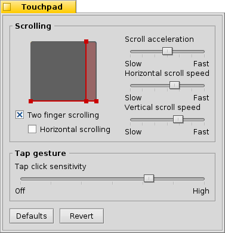

Touchpad
Touchpad
| Deskbar : | ||
| Localisation : | /boot/system/preferences/Touchpad | |
| Réglages : | ~/config/settings/Touchpad_settings |
Ce panneau présente plusieurs paramètres liés au touchpad qui sont intéressants quand vous utilisez un ordinateur portable.
En faisant glisser les lignes rouges verticales ou horizontales sur la représentation touchpad, vous définissez la zone de défilement (légèrement rougeâtre sur le coté de la zone de contact générale grise). Le déplacement de votre doigt sur cette partie de la plaque déplacera les barres de défilement de la fenêtre en conséquence.
Les curseurs à droite, règlent l'accélération générale, la vitesse de défilement vertical et horizontal.
Le paramètre d'accélération influe sur la vitesse de défilement des listes lorsque vous frotter la zone de défilement rapidement.Les vitesses de défilement contrôlent la vitesse générale quand vous utilisez la zone de défilement de façon "normale".
Au dessous de l'illustration du touchpad, des cases à cocher vous permettent d'activer le "Défilement à deux doigts" vertical (Two finger scrolling) et éventuellement horizontal. Déplacez deux doigts en parallèle verticalement ou horizontalement pour déplacer les barres de défilement d'une fenêtre. Comme pour moi, il se pourrait que ça fonctionne mieux si vous utilisez un doigt de chaque main.
Si vous vous sentez à l'aise avec cette fonctionnalité, vous pouvez vous passer des zones de défilement et ainsi utiliser toute la zone de contact pour la navigation normale.
Le curseur du bas sert à régler la sensibilité du tapotement pour le clic. Si vos tapotement sont ignorés, augmentez la sensibilité. Si le système génère sans arrêt des clics, alors que vous souhaitez juste déplacer le curseur de la souris, essayez de la diminuer.
| réinitialise toutes les réglages. | ||
| restaure les réglages qui étaient actifs quand vous êtes entré dans le panneau de préférences du Touchpad. |
Voici une astuce qui n'est pas liée aux préférences du touchpad, mais qui traite d'un sujet plus général :
Saviez-vous que vous pouvez faire un glisser-déposer en utilisant simplement le touchpad, c'est à dire sans utiliser les boutons ? Il suffit de faire un double clic sans lever le doigt après le deuxième clic. L'icône ramassée collera à la souris et vous pourrez la faire glisser en déplaçant votre doigt. En enlevant votre doigt, vous déposerez l'icône.
Si votre doigt atteint le bord du touchpad pendant que vous faites glisser une icône, mais que le pointeur de la souris n'a pas encore atteint le bord de l'écran, comment pouvez-vous continuer à faire glisser votre icône ? Au moment même où vous relèveriez votre doigt, l'icône serait relâchée.
Selon votre matériel, il existe une option très utile : il suffit de laisser votre doigt au bord du touchpad sans le relever. Le pointeur de la souris continuera son déplacement en "pilotage automatique".